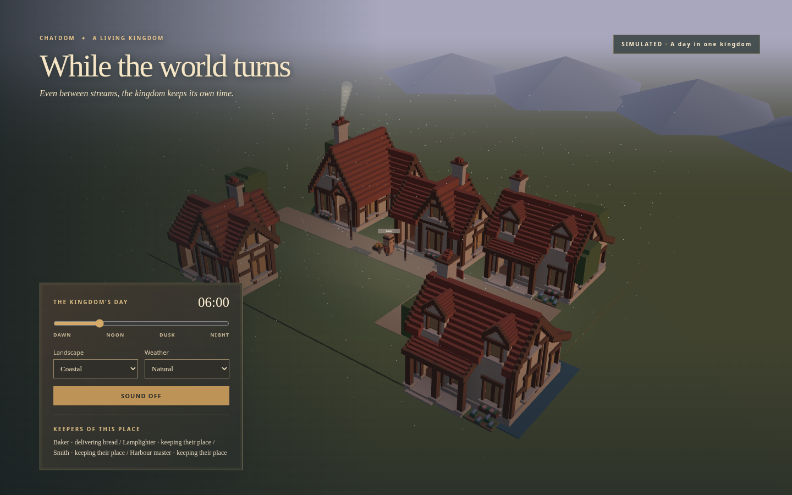
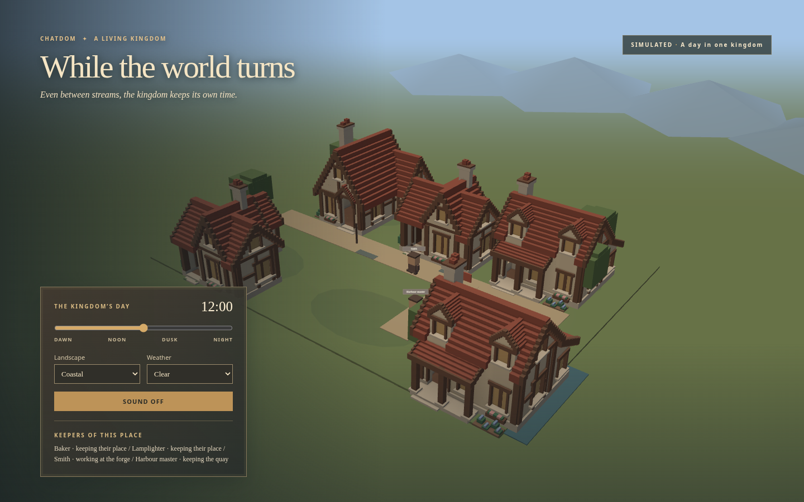
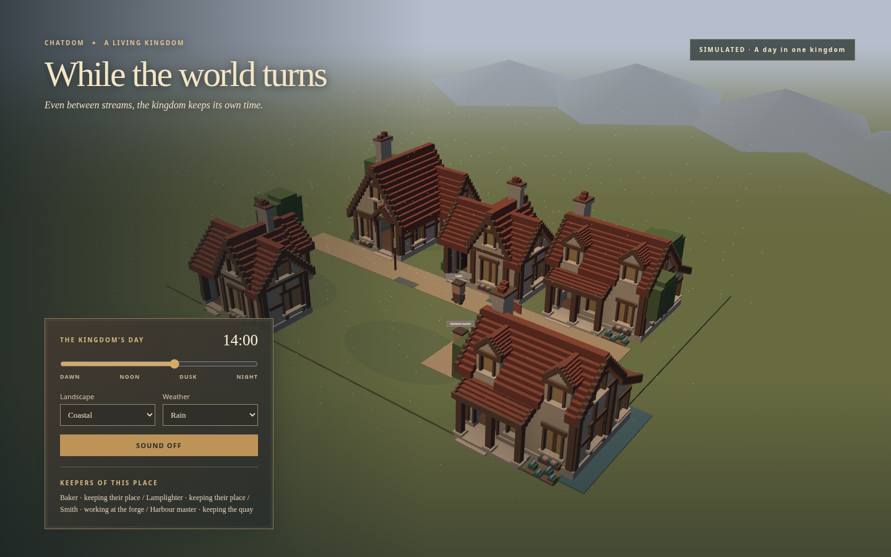
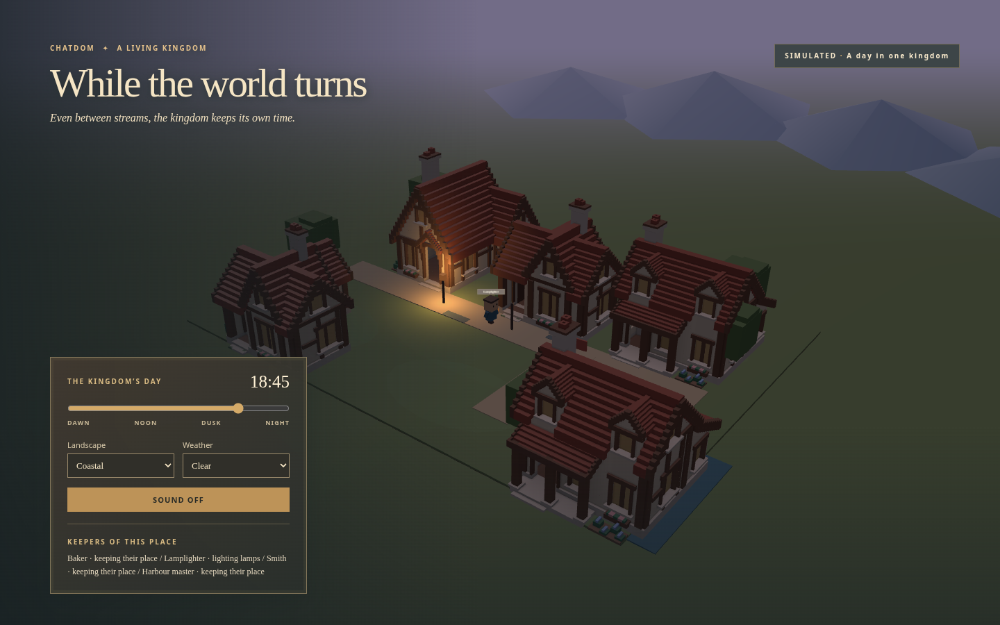
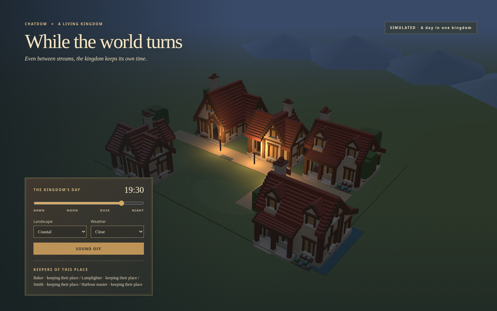
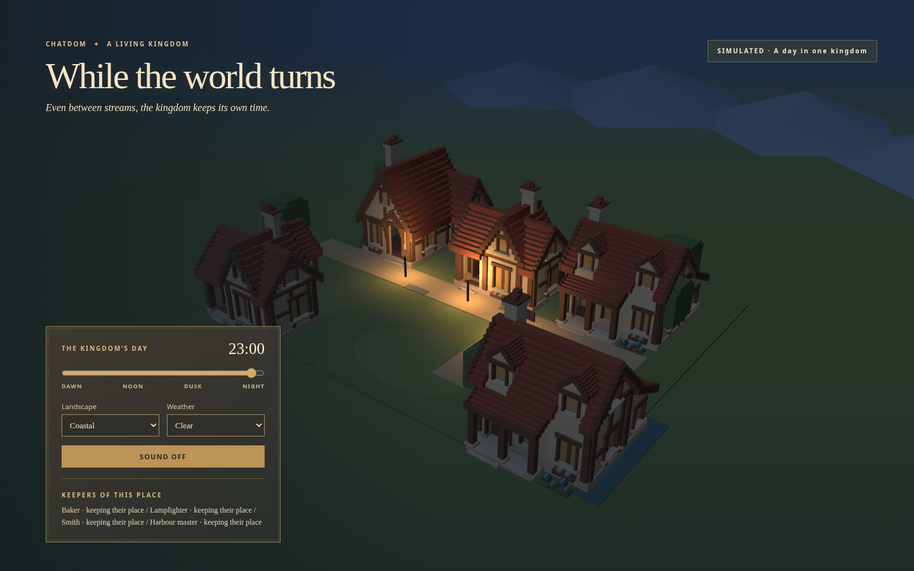
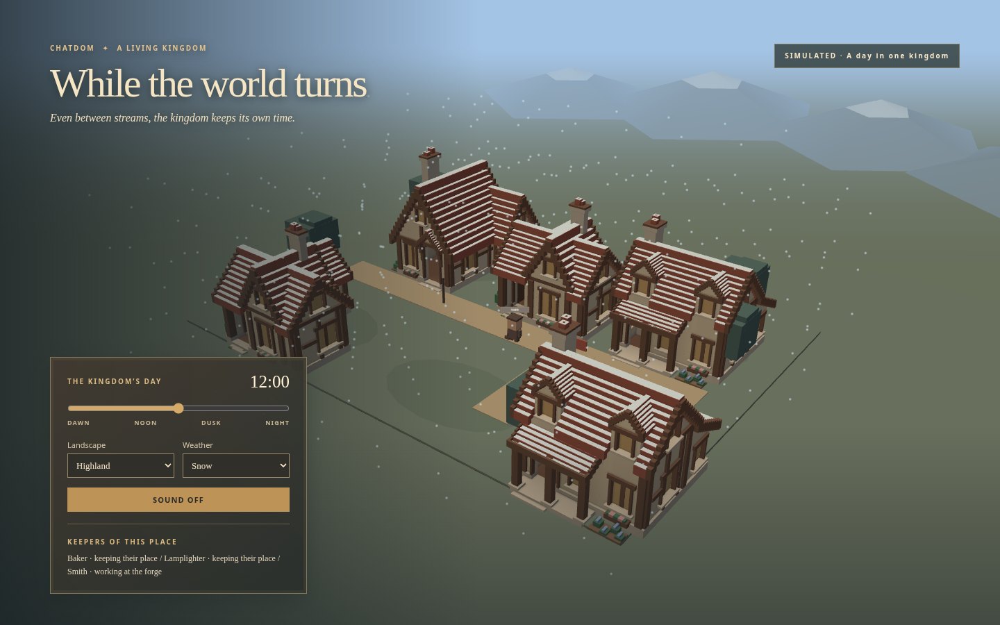
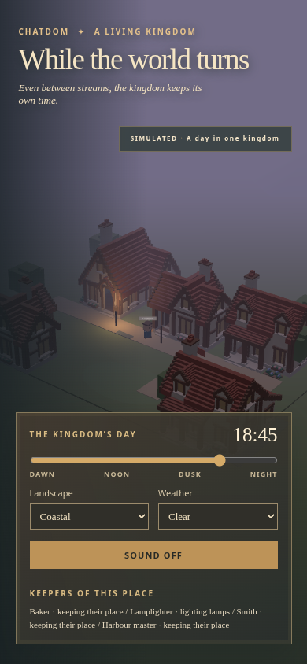
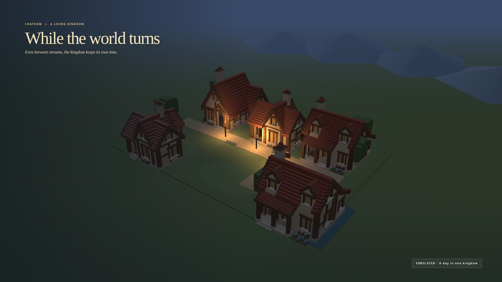

SIMULATED review. Authored Hearth homes, civic keepers and an absolute kingdom clock. Citizen windows remain unlit when their people are absent. Weather overrides in the rain and snow stills are deliberate review controls.
These images were opened and judged with the look workflow. Audio uses the same WebAudio graph as the interactive review: four biomes at four hours, with a stream comparison for each. The files and measurements demonstrate rendered signal and lifecycle; subjective listening on speakers remains unverified.
The live civic/clock binding and real walk/stream demonstration remain pending. Stars are not visible in this overhead framing; rain, night colour and the very quiet mixes still need the reviews recorded below.
Visual findings and limits · Main-owned integration needs · Decisions and verification boundaries · Signal and source budgets · LUFS and peak measurements









Play all clips at the same volume. Stream clips should sit quietly under speech; no volume normalization has been applied.
| Biome · hour · profile | Listen | Peak dBFS |
|---|---|---|
| coastal-6-walk | -25.3 | |
| coastal-12-walk | -24.4 | |
| coastal-18-walk | -24.6 | |
| coastal-18-stream | -31.2 | |
| coastal-23-walk | -23.6 | |
| woodland-6-walk | -29.6 | |
| woodland-12-walk | -26.6 | |
| woodland-18-walk | -30.3 | |
| woodland-18-stream | -37.1 | |
| woodland-23-walk | -28.7 | |
| meadow-6-walk | -30.1 | |
| meadow-12-walk | -26.7 | |
| meadow-18-walk | -30.7 | |
| meadow-18-stream | -37.2 | |
| meadow-23-walk | -29.2 | |
| highland-6-walk | -27.1 | |
| highland-12-walk | -26.1 | |
| highland-18-walk | -26.9 | |
| highland-18-stream | -33.4 | |
| highland-23-walk | -25.5 | |
| meadow-6-hamlet | -31.0 |